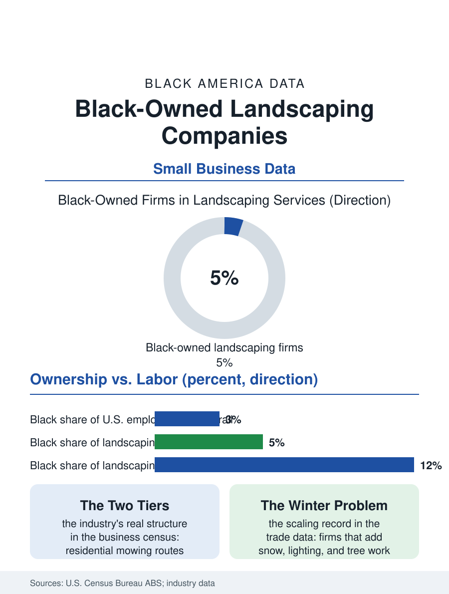

Black Business
Routes and Contracts: Black-Owned Landscaping Companies
Landscaping is easy to enter and hard to scale, and Black firms cluster in the residential tier while commercial contracts circulate elsewhere. The landscaping file.

Stand at the gate of any affluent suburb at eight in the morning and count the trucks: mowers, trailers, crews in matching shirts. Landscaping is one of America's largest small-business sectors, low to enter, brutal to scale, and overwhelmingly white-owned at the level where the money is. Black-owned landscaping companies exist in every market, concentrated in residential work in Black neighborhoods and in the commercial contracts of the South, holding a single-digit share of the industry's employer firms in the Census Bureau's business counts. This article reads the landscaping file.
The Two Industries Inside One
The Annual Business Survey and the economic census draw the map in the industry's own two tiers. The first tier is residential maintenance: weekly mowing routes, seasonal cleanups, mulch and plantings, an economy of pickup trucks and word of mouth where entry costs a mower, a trailer, and a willingness to work in August. Black firms are present here in rough proportion to effort, and the tier's economics explain both the entry and the ceiling: routes are hyperlocal, margins ride on crew labor that turns over constantly, and the customer relationship, not the equipment, is the asset. The second tier is commercial landscape services: office parks, hospitals, universities, municipal contracts, and homeowners' associations, where contracts run to six figures, bidding requires bonding, insurance, and a payroll history, and the incumbent firms are regional companies with sales staffs. The Black share of this tier thins sharply in the business data, because the tier's gates are the business file's familiar three: working capital to float sixty-day payment terms, bonding capacity, and the buyer relationships through which contract renewals circulate. Between the tiers sits the design-build segment, landscape architecture and installation, where margins are highest and Black ownership, tied to the architecture profession's own thin numbers, is thinnest of all.
Labor, Seasonality, and the Crew Problem
Every landscaping owner in the industry surveys names the same binding constraint, and it is not customers: it is crew. The work is seasonal in most of the country, physically punishing, and paid at wages that compete with warehouses and fast food, and the industry's labor solution has historically run through immigrant crews whose availability shaped the market's wage floor. Black-owned firms, hiring disproportionately from Black neighborhoods, face the file's recurring arithmetic: the workers they most want to employ are the workers with the most alternatives when the economy tightens, and retention through a Northern winter requires either snow work or savings the thin margins rarely produce. The firms that break the pattern share designs the trade press documents: year-round service mixes that add snow, holiday lighting, and tree work to flatten the calendar; commercial contracts whose monthly billing steadies payroll; and crew-leader ladders that convert the best mower operators into salaried supervisors with a stake in route quality. Equipment financing writes another line: the commercial mower fleet and trucks that define capacity are financed against the owner's personal credit in most small firms, importing the household wealth gap directly into the firm's growth rate, so that two companies doing identical work expand at speeds set by their owners' balance sheets years before the business began.
The Contract Door
The growth file's most reliable door remains institutional contracting, the same door recorded throughout this atlas's business pages. Universities, hospital systems, airports, and city governments in Black-majority metros buy landscaping at scale, and supplier-diversity programs have made Black firms visible bidders for work that once renewed by handshake. The contract record shows the pattern's two halves: first contracts won on diversity programs are frequently small, seasonal, or peripheral, and the firms that convert them into anchor relationships do so on the unglamorous metrics buyers actually track, insurance compliance, crew reliability in peak season, and the supervisor who answers the phone. Public land itself adds a final wrinkle: municipal mowing and right-of-way contracts are among the largest single landscaping purchases in Southern cities, awarded through bid processes where the lowest responsible bidder wins and where Black firms in several metros have built durable positions by bidding the work the regional companies consider too fragmented to chase. The landscaping file closes on the industry's demographic horizon: the customer base is suburbanizing and diversifying along the lines in the census files, the labor model is tightening, and the firms positioned for the commercial tier are being built now, in the residential tier, one route and one crew leader at a time.
More in Black Business
Black-Owned Businesses: Counts, Receipts, and the Representation Gap
About 161,000 Black-owned employer firms and three million solo ventures: how the Census Bureau counts Black business ownership, where firms concentrate, and the gap between population share and business share.
Black Median Net Worth: The Wealth Gap in Federal Reserve Data
The Federal Reserve puts Black median family net worth at $44,900, against $285,000 for White families — about 16 cents on the dollar. The widest gap in economic data.
Black Buying Power: The $1.8 Trillion Consumer Economy
Black buying power is estimated at about $1.8 trillion — larger than the economy of most nations. What the figure measures, who produces it, and what it buys.
Source: U.S. Census Bureau, Annual Business Survey and Economic Census, landscaping services (NAICS 56173); industry association data.